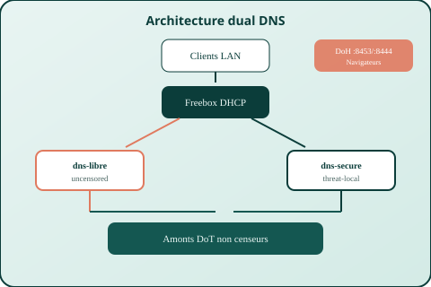

Installation
Docker Desktop, WSL2 ou Raspberry Pi — certificats DoH, compose et health-check.
Guide installation →Deux résolveurs locaux pour votre LAN : sans censure (dns-libre) et avec filtrage type Pi-hole / uBlock (dns-secure via Blocky).
Self-hosted dual DNS for Freebox / Pi / WSL — uncensoring + local filtering, MIT licensed.

Docker Desktop, WSL2 ou Raspberry Pi — certificats DoH, compose et health-check.
Guide installation →
uncensored · malware · antipub · secure — listes locales puis forward Unbound.
Choisir un mode →
Import QCOW2 ARM64, cloud-init, déploiement API et phases sûres.
Déployer sur Freebox →
Pi OS 64-bit, cloud-init ou installation manuelle avec compose prod.
Déployer sur Pi →
Docker Engine dans WSL, certs PowerShell, mirroring réseau Windows.
Déployer sur WSL →
DHCP, clients DoH/DoT, tests dig, UI Blocky et profils générés.
Guide utilisation →
Filet SOS : DNS1 = 9.9.9.10, DNS2 = IP VM. Ne jamais casser Internet.
Filet de sécurité →
flowchart TB
clients[Clients LAN]
browsers[Navigateurs DoH]
fb[Freebox DHCP]
libre[dns-libre]
secure[dns-secure Blocky]
upstreams[Amonts DoT]
fbdns[Pins FREEBOX_DNS]
clients --> fb
fb -->|UDP 53| libre
fb -->|alt| secure
browsers -->|:8453 / :8444| libre
browsers --> secure
libre --> upstreams
secure --> upstreams
libre -.-> fbdns
secure -.-> fbdns
| Service | Lab | Prod |
|---|---|---|
| dns-libre (plain) | :5356 | :53 |
| dns-secure (Blocky) | :5354 | :5354 |
| DoH libre / secure | :8453 / :8444 | |
| UI Blocky | :3080 | |
Tous les ports sont bindés sur HOST_IP uniquement — pas d'exposition Internet.
Après health-check VM : DNS1 = 9.9.9.10 (UncensoredDNS), DNS2 = IP de la VM. Ne jamais laisser la seule IP VM sans secondaire.
Lire le guide DHCP sûr →